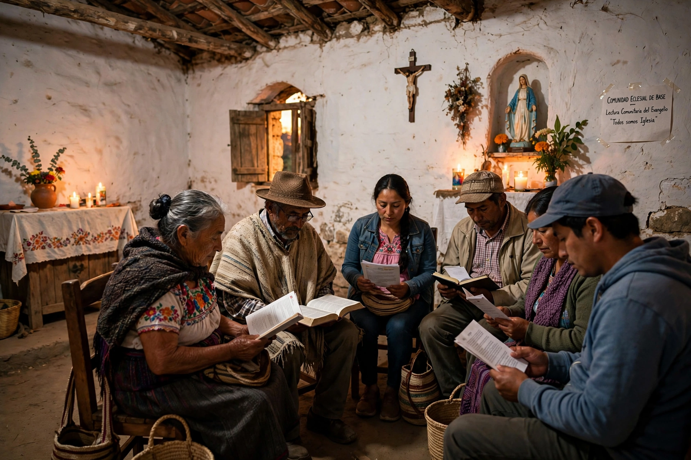

| Liberation theology | |
 | |
| Origin | Latin America, 1960s–1970s |
|---|---|
| Key figures | Gustavo Gutiérrez, Leonardo Boff, Jon Sobrino, Óscar Romero |
| Key text | Gutiérrez, A Theology of Liberation (1971) |
Liberation theology is a Christian theological movement that interprets the teachings of Jesus Christ in terms of liberation from unjust economic, political and social conditions. Emerging in Latin America after the Second Vatican Council and the 1968 Medellín conference of Latin American bishops, it emphasises a "preferential option for the poor" and holds that the Church should be actively involved in working for social justice.
The Peruvian priest Gustavo Gutiérrez coined the movement's name with his 1971 book A Theology of Liberation. Drawing on the biblical Exodus and the prophets, and using Marxist social analysis as a tool, liberation theologians argued that poverty is not a natural condition but the product of sinful structures, and that theology must begin from praxis — reflection on experience in the light of faith. Grassroots "base ecclesial communities," small groups of laypeople who read the Bible in light of their own circumstances, spread the movement's ideas across the continent. Archbishop Óscar Romero of El Salvador, assassinated in 1980 while celebrating Mass, became its most famous martyr and was canonised in 2018.
The Vatican under John Paul II and Cardinal Ratzinger (later Benedict XVI) criticised aspects of liberation theology in two instructions (1984 and 1986), warning against reducing the Gospel to politics and against class struggle, while affirming a genuine "theology of liberation" centred on human freedom. Some theologians, including Leonardo Boff, were silenced or disciplined. Under Pope Francis — the first Latin American pope — the movement's emphasis on the poor received a warmer reception, and Gutiérrez was honoured at the Vatican.
Liberation theology influenced Black theology, feminist and womanist theologies, Palestinian and Asian liberation theologies, and the broader Catholic social teaching tradition, in which the "preferential option for the poor" is now standard language.